00이 매뉴얼에 대하여
제연설비 설계 계산서는 거실 · 통로의 예상제연구역 배출량과 공기유입구 크기를 화재안전기술기준(NFTC 501) 표대로 산정하고, 제연구역 구획 · 풍도 · 전원 · 기동 · 성능확인 기준을 탭별로 확인해 A4 계산서로 정리하는 웹도구입니다.
| 항목 | 내용 |
|---|---|
| 대상 프로그램 | 제연설비 설계 계산서 MANMIN Ver-5.1(v5.1.1) |
| 접속 주소 | manminkim-eng.github.io/Smoke-Control-System |
| 매뉴얼 판 | Ver-5.1 (화면 표기와 같은 판 번호, 초판) · 2026-10-16 · 작성 김만민 건축사(㈜대성건축사사무소) |
| 내려받기 | PDF(A4) · 계산서 열기 |
| 근거 | NFTC 501 국립소방연구원공고 제2024-52호(2024. 10. 1.) · NFPC 501 소방청고시 제2024-48호(2024. 10. 1.) — LawMCP(국가법령정보센터) 원문 대조(2026-10-16) · 표 2.3.1.2 · 2.3.2.1 · 2.3.2.2 · 2.6.2.1은 공고 원문 PDF의 표 그림으로 확인 |
| 범위 | 거실 제연(NFTC 501) — 특별피난계단의 계단실 및 부속실 제연(NFTC 501A, 차압 · 급기)은 이 도구 범위 밖입니다 |
01한눈에 보기
설치 없이 브라우저에서 바로 열리는 단일 페이지(PWA)입니다. 입력값은 브라우저 안에서만 계산하고 서버로 보내지 않습니다.
1-1. 화면 구성
- 1작업 탭 6개 + 계산서 출력
- 2📘 매뉴얼 — 탭 막대 끝
- 3요약 바
- 4핵심기준 띠
- 5프로젝트 정보
1-2. 탭 7개
| 탭 | 내용 |
|---|---|
| ① 배출량 계산 | 예상제연구역 유형 · 구획 방식 · 수직거리 · 바닥면적 → 배출량(㎥/h) · 유입구 최소 면적(㎠) — §2.3 · §2.5.6 |
| ② 제연구역 설계 | 구역 면적 1,000 ㎡ · 직경 60 m 원 · 제연경계 폭 0.6 m / 수직거리 2 m · 통로 60 m — §2.1 |
| ③ 풍도 설계 | 배출풍도 강판 두께(표 2.6.2.1) · 풍속(흡입 15 · 배출 20 · 유입풍도 20 ㎧) · 댐퍼 — §2.6 ~ §2.8 |
| ④ 전원 · 기동 | 비상전원 20분 · 감지기 연동 · 수동기동장치 0.8 ~ 1.5 m · 작동사항 3가지 — §2.9 |
| ⑤ 성능 확인 | 배출구별 · 유입구별 측정값 ≥ 설계값의 60 % · 시험 항목 · 설치제외 — §2.10 · §2.11 |
| ⑥ 법규 요람 | 조문 요람 · 배출량 표 3종(원문 값) · 적용 법령 |
| 🖨️ 계산서 출력 | A4 계산서 미리보기 · 인쇄 / PDF · JPG 저장 |
021분 따라하기
예제 A — 만민 건축사 신축공사 현장(앱 기본 공사명, 입력값은 예시) · 바닥면적 600 ㎡ 거실 · 직경 40 m 원 안 · 제연경계(보)로 구획 · 수직거리 2 m.
- ① 프로젝트공사명 · 설계자 · 작성일 — A4 계산서 머리에 들어갑니다.
- ② 유형 · 구획「거실(≥ 400 ㎡, 직경 ≤ 40 m 원)」 · 「제연경계(보 · 경계벽)로 구획」.
- ③ 수직거리 · 면적수직거리 2 m · 바닥면적 600 ㎡ → 「💨 배출량 계산」.
- ④ 결과표 2.3.2.1 「2 m 이하」 → 40,000 ㎥/h(666.7 ㎥/min) · 유입구 666.7 × 35 = 23,333.3 → 23,334 ㎠(올림).
- ⑤ 구획 · 풍도 · 성능② 탭 면적 600 ㎡(60 %) · ③ 탭 풍도 1,000 × 800 mm → 강판 0.8 mm · 흡입측 13.89 ㎧ ≤ 15 · ⑤ 탭 측정 달성률.
- ⑥ A4 계산서「🖨️ 계산서 출력」 → 「🖨️ 인쇄 · PDF」 또는 「🖼️ JPG 저장」.
03화면별 기능
3-1. 머리 · 매뉴얼
- 1도구 이름 · Ver-5.1
- 2📘 매뉴얼 — 탭 막대 끝
- 3NFTC 501 · 시행 2024. 10. 1.
- 4탭 7개
탭 막대 오른쪽 끝의 「📘 매뉴얼」은 이 문서를 새 창으로 엽니다(온라인 전용 — 인터넷 연결이 없으면 안내만 표시). 오른쪽은 적용 기준과 시행일입니다.
3-2. 제연구역 조건 입력
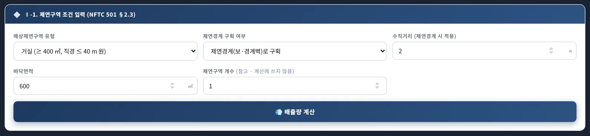
123456- 1예상제연구역 유형 5가지
- 2벽 / 제연경계 구획
- 3수직거리
- 4바닥면적
- 5제연구역 개수(참고)
- 6💨 배출량 계산
| 유형 | 산정 |
|---|---|
| 거실(< 400 ㎡) | 벽 구획: 바닥면적 × 1 ㎥/min · ㎡ × 60, 최소 5,000 ㎥/h(§2.3.1.1) / 제연경계 구획: 표 2.3.2.1(4-4) |
| 거실(≥ 400 ㎡ · 직경 40 m 원 안) | 벽 구획 40,000 ㎥/h · 제연경계 표 2.3.2.1(§2.3.2.1) |
| 거실(≥ 400 ㎡ · 직경 40 m 원 초과) | 벽 구획 45,000 ㎥/h · 제연경계 표 2.3.2.2(§2.3.2.2) |
| 통로(복도) | 벽 구획 45,000 ㎥/h · 제연경계 표 2.3.2.2(§2.3.3) — 보행중심선 60 m 초과 경고 |
| 통로배출방식 | 50 ㎡ 미만 거실을 인접 통로 배출로 갈음(§2.2.2) — 보행중심선 길이 · 수직거리로 표 2.3.1.2 |
수직거리는 제연경계 하단에서 바닥까지 거리이며, 구획 부분마다 다르면 긴 것을 넣습니다(§2.3.5). 「제연구역 개수」는 참고 칸이며 계산에 쓰지 않습니다.
3-3. 배출량 결과
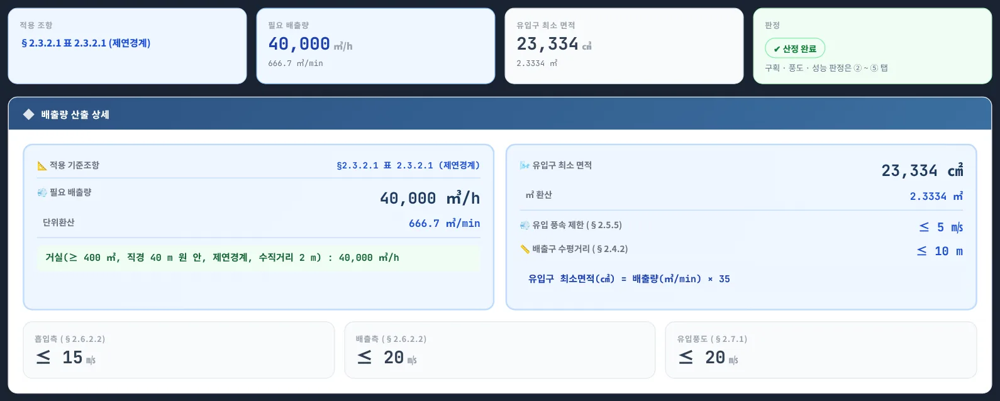
12345- 1적용 조항
- 2필요 배출량
- 3유입구 최소 면적(올림)
- 4판정 · 경고
- 5산출식
유입구 최소 면적은 배출량 1 ㎥/min당 35 ㎠ 이상(§2.5.6)이므로 v5.1.0부터 올림합니다. 판정 칸은 입력 조합의 모순(유형과 면적 불일치 · 통로 60 m 초과 · 통로배출방식 50 ㎡ 이상)만 경고하고, 구획 · 풍도 · 성능 판정은 ② ~ ⑤ 탭에서 합니다.
3-4. 사례 — 통로배출방식
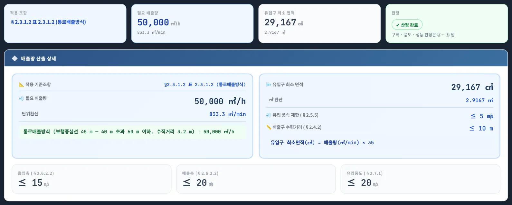
12- 1표 2.3.1.2 — 40 m 초과 · 3 m 초과
- 2산출식
표 2.3.1.2 「40 m 초과 60 m 이하 · 3 m 초과」 → 50,000 ㎥/h · 유입구 29,167 ㎠. v5.0은 같은 조건에서 45,000 ㎥/h였습니다.
3-5. 사례 — 400 ㎡ 미만 · 제연경계
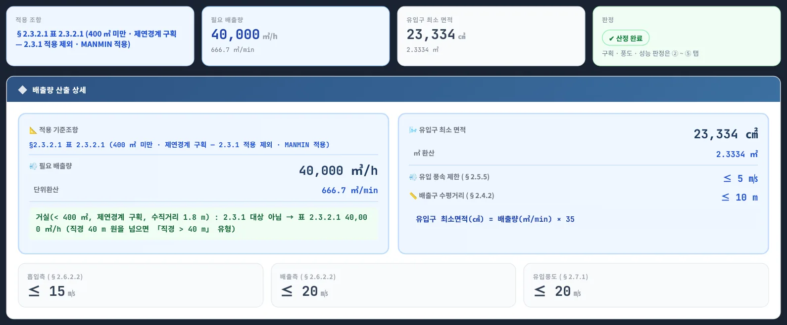
12- 12.3.1 제외 → 표 2.3.2.1
- 2필요 배출량
2.3.1은 「제연경계에 따른 구획을 제외」한 400 ㎡ 미만 구획에만 적용되므로, 제연경계로만 나뉜 300 ㎡ 거실은 표 2.3.2.1을 적용해 40,000 ㎥/h입니다(MANMIN 적용 · 통상 해석). v5.0은 300 × 60 = 18,000 ㎥/h로 계산했습니다.
3-6. 경고 표시
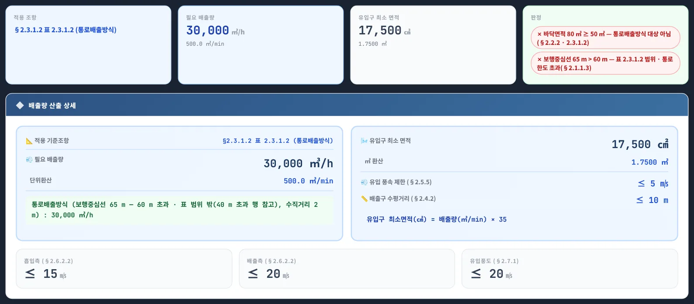
1- 1경고 2건
3-7. ② 제연구역 설계
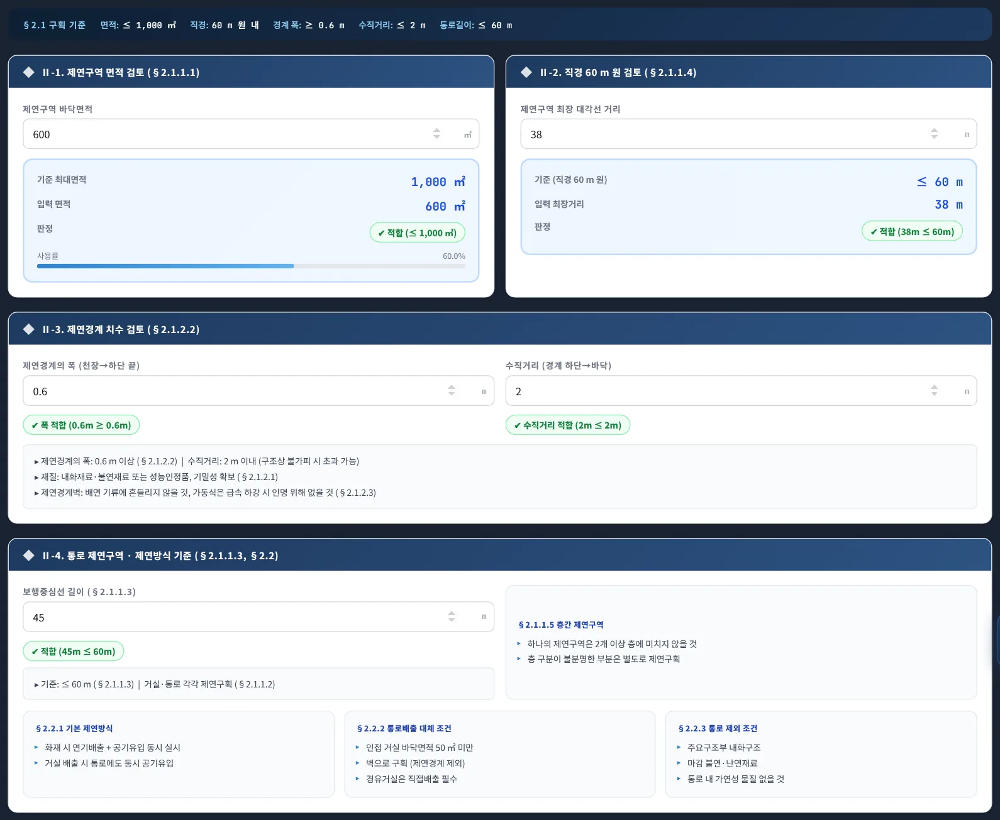
1234- 1Ⅱ-1 면적 ≤ 1,000 ㎡
- 2Ⅱ-2 직경 60 m 원
- 3Ⅱ-3 경계 폭 · 수직거리
- 4Ⅱ-4 통로 · 제연방식
면적 · 직경 · 통로 길이는 넘으면 ✗, 제연경계 수직거리는 2 m를 넘으면 「구조상 불가피 여부 검토」 ⚠입니다(§2.1.2.2 단서).
3-8. ③ 풍도 설계
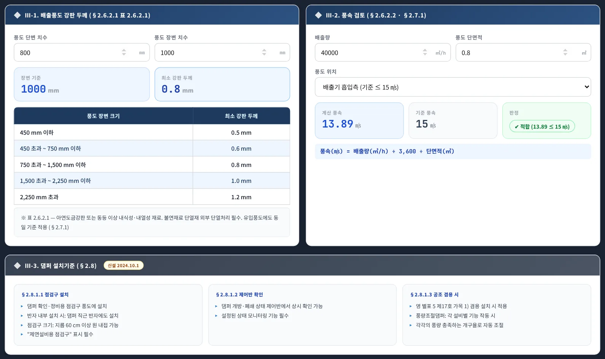
123- 1Ⅲ-1 강판 두께
- 2Ⅲ-2 풍속 15 · 20 · 20 ㎧
- 3Ⅲ-3 댐퍼(신설)
3-9. ④ 전원 · 기동
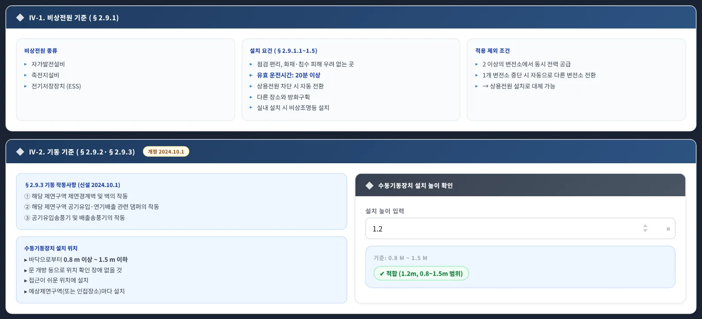
123- 1Ⅳ-1 비상전원 20분
- 2Ⅳ-2 기동 · 작동사항
- 3수동기동 0.8 ~ 1.5 m
3-10. ⑤ 성능 확인
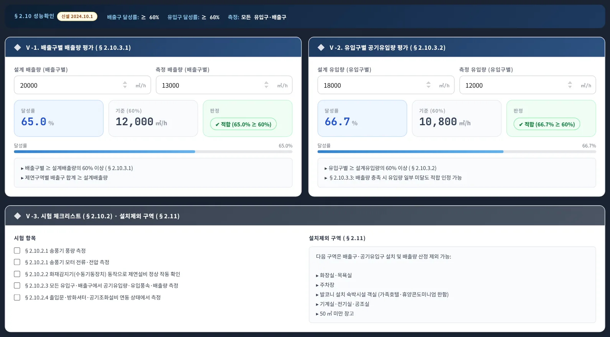
123- 1Ⅴ-1 배출구별 60 %
- 2Ⅴ-2 유입구별 60 %
- 3Ⅴ-3 시험 · 설치제외
배출구별 · 유입구별 측정값이 설계값의 60 % 이상이어야 하고, 제연구역별 배출구 합계는 설계배출량 이상이어야 합니다(§2.10.3.1). 합계 판정은 화면 안내로만 표시합니다.
3-11. ⑥ 법규 요람
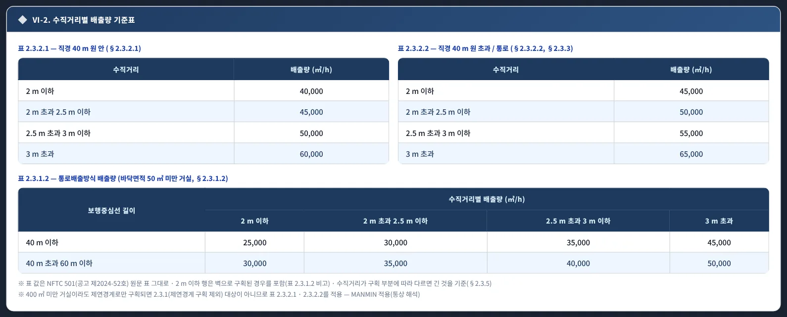
123- 1표 2.3.2.1
- 2표 2.3.2.2
- 3표 2.3.1.2
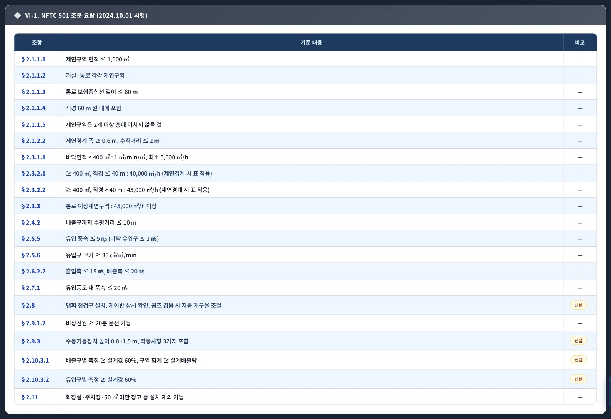
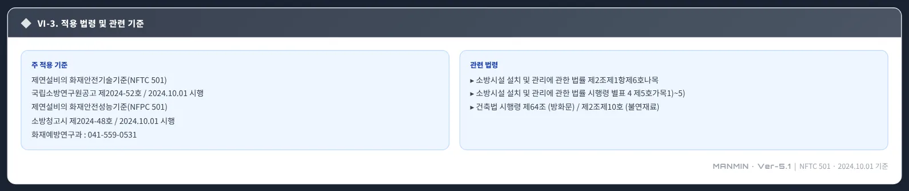
3-12. A4 계산서 출력
- 1🖼️ JPG 저장
- 2🖨️ 인쇄 · PDF
- 3A4 미리보기
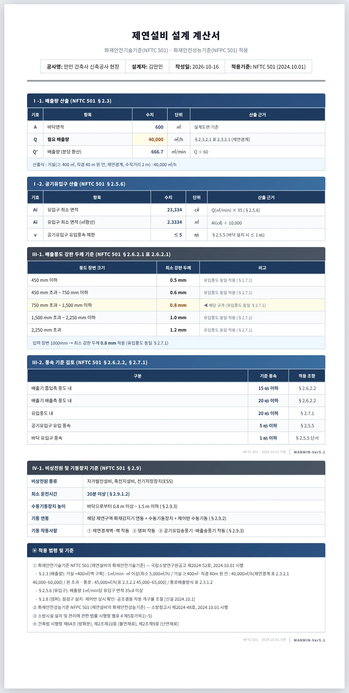
3-13. 이용안내 창
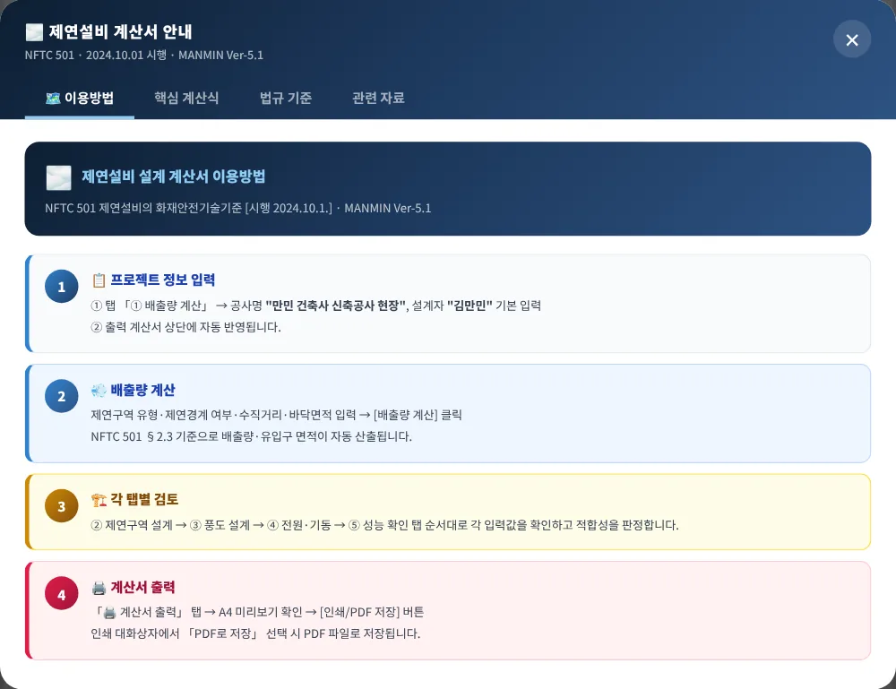
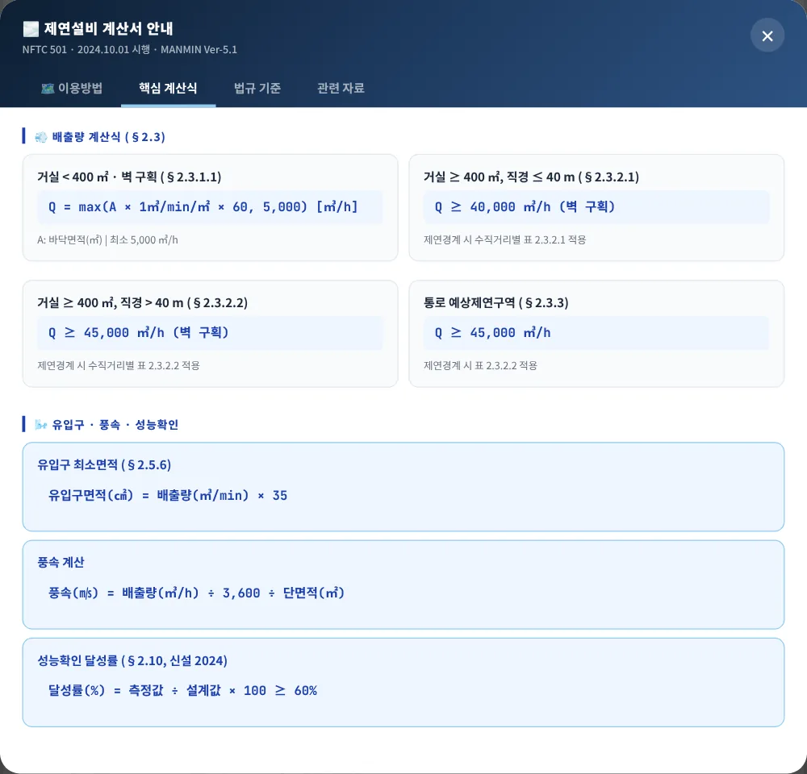
오른쪽 아래 「📐 이용안내 · 법규자료」 버튼으로 엽니다.
3-14. 휴대전화 화면
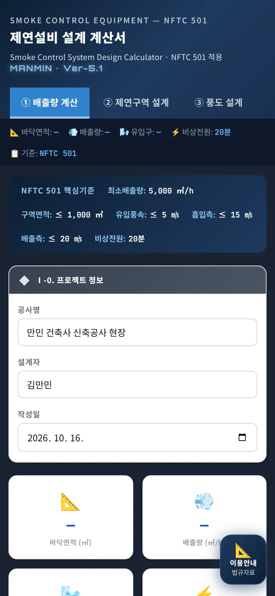
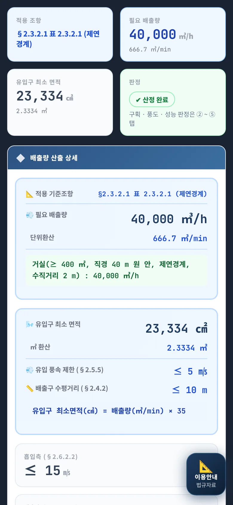
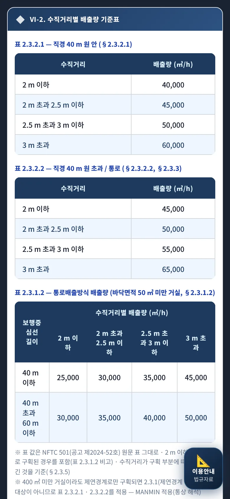
04기준 해설
4-1. 근거 체계
| 기준 | 내용 |
|---|---|
| NFTC 501 | 제연설비의 화재안전기술기준 — 국립소방연구원공고 제2024-52호 · 2024. 10. 1. 시행(조문 2.1 ~ 2.11) |
| NFPC 501 | 제연설비의 화재안전성능기준 — 소방청고시 제2024-48호(2024. 9. 13. 발령) · 2024. 10. 1. 시행(제4조 ~ 제12조) |
| 설치 대상 | 「소방시설 설치 및 관리에 관한 법률 시행령」 별표 4 제5호가목1) ~ 5) |
| 경과조치 | 2024. 10. 1. 전 건축허가 등 · 착공신고 대상물은 종전 기준(댐퍼 · 기동 · 성능확인 개정 규정 — NFPC 부칙 제2조) |
| 범위 밖 | 부속실 제연은 NFTC 501A(국립소방연구원공고 제2026-36호, 2026. 7. 1.) — 차압 40 Pa(스프링클러 12.5 Pa) 등 |
4-2. 구획 · 제연방식
| 조항 | 기준 |
|---|---|
| 2.1.1 | 제연구역 1,000 ㎡ 이내 · 거실과 통로 각각 구획 · 통로 보행중심선 60 m 이하 · 직경 60 m 원 안 · 2개 층에 걸치지 않을 것 |
| 2.1.2.2 | 제연경계 폭 0.6 m 이상 · 수직거리 2 m 이내(구조상 불가피하면 초과 가능) |
| 2.2.1 | 배출과 동시에 공기유입 · 거실 배출 시 통로에도 동시 유입 |
| 2.2.2 | 50 ㎡ 미만으로 구획된 거실(통로 인접)은 통로 배출로 갈음 가능 — 경유거실은 직접 배출 |
| 2.2.3 | 내화구조 · 불연 · 난연 마감 · 가연물 없는 통로는 예상제연구역으로 보지 않을 수 있음 |
4-3. 배출량 — 표 3종 (원문 값)
2.3.1.1: 400 ㎡ 미만(벽 구획) 거실은 바닥면적 1 ㎡당 1 ㎥/min 이상, 최소 5,000 ㎥/h. 2.3.2.1 · 2.3.2.2 · 2.3.3: 벽 구획이면 40,000 · 45,000 · 45,000 ㎥/h, 제연경계 구획이면 아래 표입니다.
표 2.3.2.1 — 직경 40 m 원 안
| 수직거리 | 배출량 |
|---|---|
| 2 m 이하 | 40,000 ㎥/h |
| 2 m 초과 2.5 m 이하 | 45,000 ㎥/h |
| 2.5 m 초과 3 m 이하 | 50,000 ㎥/h |
| 3 m 초과 | 60,000 ㎥/h |
표 2.3.2.2 — 직경 40 m 원 초과 · 통로
| 수직거리 | 배출량 |
|---|---|
| 2 m 이하 | 45,000 ㎥/h |
| 2 m 초과 2.5 m 이하 | 50,000 ㎥/h |
| 2.5 m 초과 3 m 이하 | 55,000 ㎥/h |
| 3 m 초과 | 65,000 ㎥/h |
표 2.3.1.2 — 통로배출방식(50 ㎡ 미만 거실)
| 보행중심선 | 2 m 이하 | 2 ~ 2.5 m | 2.5 ~ 3 m | 3 m 초과 |
|---|---|---|---|---|
| 40 m 이하 | 25,000 | 30,000 | 35,000 | 45,000 |
| 40 m 초과 60 m 이하 | 30,000 | 35,000 | 40,000 | 50,000 |
단위 ㎥/h 이상. 표 2.3.1.2의 「2 m 이하」 행은 벽으로 구획된 경우를 포함합니다(원문 비고).
4-4. 400 ㎡ 미만 · 제연경계 해석
2.3.1은 「거실의 바닥면적이 400 ㎡ 미만으로 구획(제연경계에 따른 구획을 제외한다. 다만, 거실과 통로와의 구획은 그렇지 않다)된 예상제연구역」입니다. 제연경계로만 나뉜 400 ㎡ 미만 구역은 2.3.1의 면적 비례식을 쓸 수 없으므로, 앱은 2.3.2의 표(직경 40 m 원 안이면 표 2.3.2.1)를 적용합니다. 원문에 수치를 직접 정한 문장은 없어 MANMIN 적용(통상 해석)으로 표시하며, 원을 넘으면 「직경 > 40 m」 유형을 고르십시오. 관할 소방서 협의 결과가 다르면 그에 따릅니다.
4-5. 공동예상제연구역 (참고 — 계산 기능 없음)
| 구분 | 배출량 |
|---|---|
| 벽으로 구획(출입구만 제연경계 포함) | 각 예상제연구역 배출량의 합 이상 — 400 ㎡ 미만은 1 ㎥/min · ㎡ · 전체 5,000 ㎥/h 이상(2.3.4.1) |
| 제연경계로 구획 | 각 예상제연구역 배출량 중 최대 — 거실은 1,000 ㎡ 이하 · 직경 40 m 원 안, 통로는 보행중심선 40 m 이하(2.3.4.2) |
| 제한 | 거실과 통로는 공동예상제연구역으로 할 수 없음(2.3.4 단서) |
4-6. 배출구 · 유입구
| 조항 | 기준 |
|---|---|
| 2.4.2 | 예상제연구역 각 부분에서 하나의 배출구까지 수평거리 10 m 이내 |
| 2.5.2 | 400 ㎡ 미만 거실: 유입구 ↔ 배출구 직선거리 5 m 이상 또는 장변의 1/2 이상 / 400 ㎡ 이상 거실: 바닥에서 1.5 m 이하 |
| 2.5.5 | 유입 순간 풍속 5 ㎧ 이하 · 상향 분출 금지(바닥 유입구는 상향 가능 · 1 ㎧ 이하) |
| 2.5.6 | 유입구 크기 — 배출량 1 ㎥/min당 35 ㎠ 이상 |
4-7. 풍도 · 댐퍼
| 풍도 단면의 긴 변 또는 직경 | 강판 두께(표 2.6.2.1) |
|---|---|
| 450 mm 이하 | 0.5 mm |
| 450 mm 초과 750 mm 이하 | 0.6 mm |
| 750 mm 초과 1,500 mm 이하 | 0.8 mm |
| 1,500 mm 초과 2,250 mm 이하 | 1.0 mm |
| 2,250 mm 초과 | 1.2 mm |
배출풍도는 아연도금강판 등 · 불연재료 단열(2.6.2.1), 흡입측 15 ㎧ · 배출측 20 ㎧ 이하(2.6.2.2), 유입풍도 20 ㎧ 이하 · 같은 두께(2.7.1). 댐퍼는 점검구(반자 안이면 지름 60 cm 원 내접 점검구 · 표시), 제어반 상시 확인, 공조 겸용 시 풍량조절댐퍼 개구율 자동 조절(2.8 — 2024. 10. 1. 신설).
4-8. 전원 · 기동 · 성능확인
| 조항 | 기준 |
|---|---|
| 2.9.1 | 비상전원 — 자가발전 · 축전지 · 전기저장장치, 20분 이상, 자동 전환, 방화구획, 실내면 비상조명등(2 이상 변전소 수전 시 예외) |
| 2.9.2 · 2.9.3 | 감지기 연동 + 예상제연구역마다 수동기동장치 · 제어반 수동기동 / 수동기동장치 0.8 ~ 1.5 m · 작동: 제연경계벽 · 벽, 댐퍼, 유입 · 배출 송풍기 |
| 2.10.3 | 배출구별 · 유입구별 측정값 ≥ 설계값 60 % · 구역별 배출량 합계 ≥ 설계배출량 · 배출량 충족 시 유입량 일부 미달 인정 |
| 2.11 | 화장실 · 목욕실 · 주차장 · 발코니 있는 숙박시설 객실(가족호텔 · 휴양콘도) · 무인 기계 · 전기 · 공조실 · 50 ㎡ 미만 창고는 배출량 산정 등에서 제외 가능 |
4-9. MANMIN 적용 사항
| 항목 | 내용 |
|---|---|
| 400 ㎡ 미만 · 제연경계 | 표 2.3.2.1 적용(4-4) — 통상 해석 |
| 유입구 면적 | 「35 ㎠ 이상」 → 올림 표시 |
| 풍속 | 배출량 ÷ 3,600 ÷ 풍도 단면적 — 풍도별 실제 풍량은 설계자가 넣음 |
| 경고 | 입력 조합 모순만 경고 — 적합 판정을 대신하지 않음 |
4-10. v5.1.0 정정 (2026-10-16)
| 항목 | 기존(v5.0) | 정정(v5.1.0) |
|---|---|---|
| 표 2.3.2.1 | 35,000 · 40,000 · 45,000 · 50,000 | 40,000 · 45,000 · 50,000 · 60,000 ㎥/h |
| 표 2.3.2.2 3 m 초과 | 60,000 | 65,000 ㎥/h |
| 표 2.3.1.2 3 m 초과 | 40,000 · 45,000 | 45,000 · 50,000 ㎥/h |
| 표 2.3.1.2 길이 | 40 m 미만 / 40 m 이상 | 40 m 이하 / 40 m 초과 60 m 이하 · 60 m 초과 경고 |
| 표 경계 표기 | 2 m 미만 · 3 m 이상 | 2 m 이하 · 2 m 초과 2.5 m 이하 · 2.5 m 초과 3 m 이하 · 3 m 초과 |
| 400 ㎡ 미만 · 제연경계 | 면적 × 60(최소 5,000) | 표 2.3.2.1(MANMIN 적용) |
| 판정 · 유입구 · 판 번호 | 항상 「기준 충족」 · 반올림 · NFPC 번호 없음 | 경고 · 올림 · NFPC 501 고시 제2024-48호 |
독립 구현과 앱 엔진 61,830건 대조 불일치 0, 오류 주입 4종 모두 검출(manual/_tools/verify_smk.py).
05실무 작업 방법
5-1. 설계 절차
- ① 대상 확인시행령 별표 4 제5호가목 대상 · 설치제외 부분(2.11) 표시.
- ② 제연구역 구획1,000 ㎡ · 직경 60 m · 통로 60 m · 층별 — 벽 / 제연경계 구분, 제연경계 폭 · 수직거리 기입.
- ③ 구역별 배출량유형 · 구획 · 수직거리로 ① 탭 산정 — 공동예상제연구역이면 2.3.4로 합산 또는 최대.
- ④ 유입 · 풍도유입구 크기(35 ㎠/㎥/min) · 풍속 5 ㎧ · 풍도 두께 · 풍속.
- ⑤ 전원 · 기동 · 시험비상전원 20분 · 수동기동 높이 · 완공 시 측정값 60 % 판정.
- ⑥ 기록A4 계산서를 설계도서 · 착공신고 검토 자료에 첨부.
5-2. 문제 해결 · FAQ
| 증상 | 해결 |
|---|---|
| 예전 계산서와 값이 달라요 | v5.1.0에서 원문 표 값으로 정정했습니다(4-10) — 다시 계산하십시오 |
| 400 ㎡ 미만인데 40,000 ㎥/h가 나와요 | 제연경계 구획을 골랐기 때문입니다(4-4) — 벽 구획이면 면적 × 60 |
| 통로배출방식에 경고가 떠요 | 50 ㎡ 이상 거실이거나 보행중심선이 60 m를 넘었습니다 |
| 부속실 차압은요 | NFTC 501A 대상 — 이 도구 범위 밖입니다 |
| 화면이 예전 판이에요 | 새로 고침(Ctrl+F5) — v5.1.1부터 캐시 이름이 jeyeon-v5.1.1입니다 |
부록
A1. 버전 변경 내역
| 버전 | 내용 |
|---|---|
| Ver-5.1 · v5.1.1 (2026-10-16) | 「📘 매뉴얼」 버튼을 머리에서 탭 막대 오른쪽 끝으로 옮김 · 절대주소 · 오프라인 안내 · sw jeyeon-v5.1.1 |
| Ver-5.1 · v5.1.0 (2026-10-16) | NFTC 501 원문 표 대조 정정(4-10) · 경고 · 유입구 올림 · NFPC 판 번호 · 「📘 매뉴얼」 · sw jeyeon-v5.1.0 |
| Ver-5.0 (2026-08-30 ~ 09-05) | MANMIN 디자인 통일 · A4 규격 · JPG 저장 · sw 정비(v5.0.1 ~ 5.0.7) |
A2. 용어
| 용어 | 뜻 |
|---|---|
| 예상제연구역 | 화재 시 연기의 제어가 요구되는 제연구역(1.7.1.7) |
| 제연경계 · 폭 · 수직거리 | 연기를 가두는 보 · 제연경계벽 / 천장에서 하단까지 / 하단에서 바닥까지(1.7.1.3 · 5 · 6) |
| 통로배출방식 | 거실 연기를 직접 배출하지 않고 면한 통로의 연기를 옥외로 배출(1.7.1.9) |
| 보행중심선 | 통로 폭의 한가운데를 연장한 선(1.7.1.10) |
| 공동예상제연구역 | 2개 이상의 예상제연구역을 동시에 제연하는 구역(1.7.1.8) |